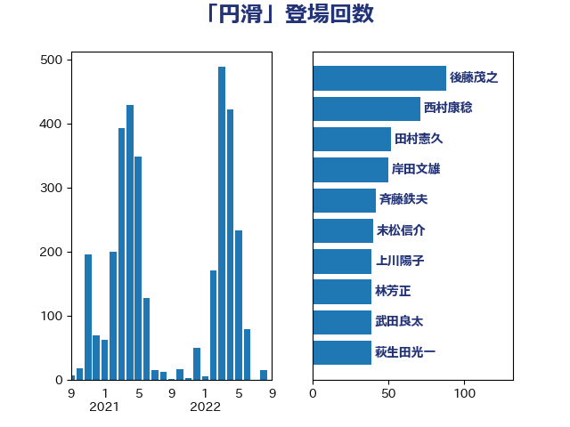

単語「円滑」

| 後藤茂之 | 自由民主党 | 88 回 |
| 西村康稔 | 自由民主党 | 71 回 |
| 田村憲久 | 自由民主党 | 52 回 |
| 岸田文雄 | 自由民主党 | 50 回 |
| 斉藤鉄夫 | 公明党 | 42 回 |
| 末松信介 | 自由民主党 | 40 回 |
| 上川陽子 | 自由民主党 | 39 回 |
| 林芳正 | 自由民主党 | 39 回 |
| 武田良太 | 自由民主党 | 39 回 |
| 萩生田光一 | 自由民主党 | 39 回 |
| 菅義偉 | 自由民主党 | 38 回 |
| 金子恭之 | 自由民主党 | 36 回 |
| 小泉進次郎 | 自由民主党 | 35 回 |
| 岸信夫 | 自由民主党 | 34 回 |
| 梶山弘志 | 自由民主党 | 30 回 |
| 茂木敏充 | 自由民主党 | 30 回 |
| 赤羽一嘉 | 公明党 | 29 回 |
| 山本博司 | 公明党 | 28 回 |
| 鈴木俊一 | 自由民主党 | 28 回 |
| 古川禎久 | 自由民主党 | 27 回 |
| 平井卓也 | 自由民主党 | 23 回 |
| 小林鷹之 | 自由民主党 | 20 回 |
| 佐藤英道 | 公明党 | 17 回 |
| 高橋光男 | 公明党 | 17 回 |
| 加藤勝信 | 自由民主党 | 16 回 |
| 野上浩太郎 | 自由民主党 | 15 回 |
| 城井崇 | 立憲民主党 | 14 回 |
| 野田聖子 | 自由民主党 | 14 回 |
| 河野太郎 | 自由民主党 | 12 回 |
| 浜口誠 | 国民民主党 | 12 回 |
| 山際大志郎 | 自由民主党 | 11 回 |
| 麻生太郎 | 自由民主党 | 11 回 |
| 安江伸夫 | 公明党 | 10 回 |
| 石井啓一 | 公明党 | 10 回 |
| こやり隆史 | 自由民主党 | 9 回 |
| 井上信治 | 自由民主党 | 9 回 |
| 坂本哲志 | 自由民主党 | 9 回 |
| 大口善徳 | 公明党 | 9 回 |
| 杉久武 | 公明党 | 9 回 |
| 熊田裕通 | 自由民主党 | 9 回 |
| 玉木雄一郎 | 国民民主党 | 9 回 |
| 下野六太 | 公明党 | 8 回 |
| 和田義明 | 自由民主党 | 8 回 |
| 室井邦彦 | 日本維新の会 | 8 回 |
| 浮島智子 | 公明党 | 8 回 |
| 田村まみ | 国民民主党 | 8 回 |
| 磯崎仁彦 | 自由民主党 | 8 回 |
| 野田国義 | 立憲民主党 | 8 回 |
| あかま二郎 | 自由民主党 | 7 回 |
| 中島克仁 | 立憲民主党 | 7 回 |
| 川田龍平 | 立憲民主党 | 7 回 |
| 柴田巧 | 日本維新の会 | 7 回 |
| 森田俊和 | 立憲民主党 | 7 回 |
| 牧島かれん | 自由民主党 | 7 回 |
| 福重隆浩 | 公明党 | 7 回 |
| 赤澤亮正 | 自由民主党 | 7 回 |
| 里見隆治 | 公明党 | 7 回 |
| 高木毅 | 自由民主党 | 7 回 |
| 中村裕之 | 自由民主党 | 6 回 |
| 吉田宣弘 | 公明党 | 6 回 |
| 吉田忠智 | 立憲民主党 | 6 回 |
| 山口那津男 | 公明党 | 6 回 |
| 木村英子 | れいわ新選組 | 6 回 |
| 本田顕子 | 自由民主党 | 6 回 |
| 松村祥史 | 自由民主党 | 6 回 |
| 橋本聖子 | 無所属 | 6 回 |
| 津島淳 | 自由民主党 | 6 回 |
| 田畑裕明 | 自由民主党 | 6 回 |
| 石川博崇 | 公明党 | 6 回 |
| 神谷裕 | 立憲民主党 | 6 回 |
| 長浜博行 | 無所属 | 6 回 |
| 階猛 | 立憲民主党 | 6 回 |
| おおつき紅葉 | 立憲民主党 | 5 回 |
| 井上英孝 | 日本維新の会 | 5 回 |
| 北側一雄 | 公明党 | 5 回 |
| 國重徹 | 公明党 | 5 回 |
| 山口壯 | 自由民主党 | 5 回 |
| 山添拓 | 日本共産党 | 5 回 |
| 新妻秀規 | 公明党 | 5 回 |
| 日下正喜 | 公明党 | 5 回 |
| 朝日健太郎 | 自由民主党 | 5 回 |
| 松野博一 | 自由民主党 | 5 回 |
| 根本幸典 | 自由民主党 | 5 回 |
| 泉田裕彦 | 自由民主党 | 5 回 |
| 渡辺猛之 | 自由民主党 | 5 回 |
| 牧山ひろえ | 立憲民主党 | 5 回 |
| 笹川博義 | 自由民主党 | 5 回 |
| 細田健一 | 自由民主党 | 5 回 |
| 緑川貴士 | 立憲民主党 | 5 回 |
| 自見はなこ | 自由民主党 | 5 回 |
| 芳賀道也 | 国民民主党 | 5 回 |
| 道下大樹 | 立憲民主党 | 5 回 |
| 青木愛 | 立憲民主党 | 5 回 |
| 鬼木誠 | 立憲民主党 | 5 回 |
| 三原じゅん子 | 自由民主党 | 4 回 |
| 三谷英弘 | 自由民主党 | 4 回 |
| 中谷一馬 | 立憲民主党 | 4 回 |
| 中野洋昌 | 公明党 | 4 回 |
| 丸川珠代 | 自由民主党 | 4 回 |
| 佐々木さやか | 公明党 | 4 回 |
| 佐藤茂樹 | 公明党 | 4 回 |
| 古屋範子 | 公明党 | 4 回 |
| 宮路拓馬 | 自由民主党 | 4 回 |
| 山本順三 | 自由民主党 | 4 回 |
| 平口洋 | 自由民主党 | 4 回 |
| 後藤祐一 | 立憲民主党 | 4 回 |
| 松下新平 | 自由民主党 | 4 回 |
| 田名部匡代 | 立憲民主党 | 4 回 |
| 竹内譲 | 公明党 | 4 回 |
| 簗和生 | 自由民主党 | 4 回 |
| 藤巻健太 | 日本維新の会 | 4 回 |
| 足立康史 | 日本維新の会 | 4 回 |
| 鈴木庸介 | 立憲民主党 | 4 回 |
| 鰐淵洋子 | 公明党 | 4 回 |
| 中西祐介 | 自由民主党 | 3 回 |
| 中野英幸 | 自由民主党 | 3 回 |
| 丹羽秀樹 | 自由民主党 | 3 回 |
| 佐藤啓 | 自由民主党 | 3 回 |
| 勝目康 | 自由民主党 | 3 回 |
| 古川康 | 自由民主党 | 3 回 |
| 古賀篤 | 自由民主党 | 3 回 |
| 堀内詔子 | 自由民主党 | 3 回 |
| 宮内秀樹 | 自由民主党 | 3 回 |
| 宮崎雅夫 | 自由民主党 | 3 回 |
| 小宮山泰子 | 立憲民主党 | 3 回 |
| 小田原潔 | 自由民主党 | 3 回 |
| 小西洋之 | 立憲民主党 | 3 回 |
| 小里泰弘 | 自由民主党 | 3 回 |
| 山本香苗 | 公明党 | 3 回 |
| 岩田和親 | 自由民主党 | 3 回 |
| 川合孝典 | 国民民主党 | 3 回 |
| 平山佐知子 | 無所属 | 3 回 |
| 平木大作 | 公明党 | 3 回 |
| 斎藤嘉隆 | 立憲民主党 | 3 回 |
| 新垣邦男 | 立憲民主党 | 3 回 |
| 木原誠二 | 自由民主党 | 3 回 |
| 松川るい | 自由民主党 | 3 回 |
| 森本真治 | 立憲民主党 | 3 回 |
| 櫻井周 | 立憲民主党 | 3 回 |
| 武部新 | 自由民主党 | 3 回 |
| 池田佳隆 | 自由民主党 | 3 回 |
| 浅野哲 | 国民民主党 | 3 回 |
| 稲津久 | 公明党 | 3 回 |
| 竹内真二 | 公明党 | 3 回 |
| 竹谷とし子 | 公明党 | 3 回 |
| 美延映夫 | 日本維新の会 | 3 回 |
| 舞立昇治 | 自由民主党 | 3 回 |
| 若宮健嗣 | 自由民主党 | 3 回 |
| 藤井比早之 | 自由民主党 | 3 回 |
| 藤木眞也 | 自由民主党 | 3 回 |
| 西銘恒三郎 | 自由民主党 | 3 回 |
| 谷合正明 | 公明党 | 3 回 |
| 馬場成志 | 自由民主党 | 3 回 |
| 高良鉄美 | 無所属 | 3 回 |
| ながえ孝子 | 無所属 | 2 回 |
| 三ッ林裕巳 | 自由民主党 | 2 回 |
| 世耕弘成 | 自由民主党 | 2 回 |
| 伊藤孝江 | 公明党 | 2 回 |
| 伊藤岳 | 日本共産党 | 2 回 |
| 伊藤渉 | 公明党 | 2 回 |
| 佐々木紀 | 自由民主党 | 2 回 |
| 加田裕之 | 自由民主党 | 2 回 |
| 務台俊介 | 自由民主党 | 2 回 |
| 古川元久 | 国民民主党 | 2 回 |
| 吉川元 | 立憲民主党 | 2 回 |
| 吉川沙織 | 立憲民主党 | 2 回 |
| 吉川赳 | 無所属 | 2 回 |
| 吉田とも代 | 日本維新の会 | 2 回 |
| 吉田久美子 | 公明党 | 2 回 |
| 嘉田由紀子 | 無所属 | 2 回 |
| 国光あやの | 自由民主党 | 2 回 |
| 堀井巌 | 自由民主党 | 2 回 |
| 塩田博昭 | 公明党 | 2 回 |
| 大家敏志 | 自由民主党 | 2 回 |
| 奥野総一郎 | 立憲民主党 | 2 回 |
| 小森卓郎 | 自由民主党 | 2 回 |
| 小熊慎司 | 立憲民主党 | 2 回 |
| 小野田紀美 | 自由民主党 | 2 回 |
| 山下芳生 | 日本共産党 | 2 回 |
| 山下貴司 | 自由民主党 | 2 回 |
| 山口俊一 | 自由民主党 | 2 回 |
| 山岡達丸 | 立憲民主党 | 2 回 |
| 山岸一生 | 立憲民主党 | 2 回 |
| 岡田克也 | 立憲民主党 | 2 回 |
| 岩屋毅 | 自由民主党 | 2 回 |
| 岸真紀子 | 立憲民主党 | 2 回 |
| 島村大 | 自由民主党 | 2 回 |
| 平林晃 | 公明党 | 2 回 |
| 平沢勝栄 | 自由民主党 | 2 回 |
| 徳永久志 | 立憲民主党 | 2 回 |
| 斎藤アレックス | 国民民主党 | 2 回 |
| 木村次郎 | 自由民主党 | 2 回 |
| 本庄知史 | 立憲民主党 | 2 回 |
| 杉本和巳 | 日本維新の会 | 2 回 |
| 東徹 | 日本維新の会 | 2 回 |
| 梅村みずほ | 日本維新の会 | 2 回 |
| 森屋宏 | 自由民主党 | 2 回 |
| 森山浩行 | 立憲民主党 | 2 回 |
| 横沢高徳 | 立憲民主党 | 2 回 |
| 江島潔 | 自由民主党 | 2 回 |
| 熊野正士 | 公明党 | 2 回 |
| 田所嘉徳 | 自由民主党 | 2 回 |
| 田村貴昭 | 日本共産党 | 2 回 |
| 盛山正仁 | 自由民主党 | 2 回 |
| 矢倉克夫 | 公明党 | 2 回 |
| 礒崎哲史 | 国民民主党 | 2 回 |
| 神津たけし | 立憲民主党 | 2 回 |
| 神田憲次 | 自由民主党 | 2 回 |
| 福岡資麿 | 自由民主党 | 2 回 |
| 船橋利実 | 自由民主党 | 2 回 |
| 葉梨康弘 | 自由民主党 | 2 回 |
| 藤原崇 | 自由民主党 | 2 回 |
| 藤川政人 | 自由民主党 | 2 回 |
| 角田秀穂 | 公明党 | 2 回 |
| 豊田俊郎 | 自由民主党 | 2 回 |
| 足立敏之 | 自由民主党 | 2 回 |
| 輿水恵一 | 公明党 | 2 回 |
| 遠藤利明 | 自由民主党 | 2 回 |
| 重徳和彦 | 立憲民主党 | 2 回 |
| 金子恵美 | 立憲民主党 | 2 回 |
| 鈴木貴子 | 自由民主党 | 2 回 |
| 高橋克法 | 自由民主党 | 2 回 |
| 高階恵美子 | 自由民主党 | 2 回 |
| 高鳥修一 | 自由民主党 | 2 回 |
| 三木亨 | 自由民主党 | 1 回 |
| 三浦信祐 | 公明党 | 1 回 |
| 上野通子 | 自由民主党 | 1 回 |
| 下村博文 | 自由民主党 | 1 回 |
| 中川宏昌 | 公明党 | 1 回 |
| 中根一幸 | 自由民主党 | 1 回 |
| 中西健治 | 自由民主党 | 1 回 |
| 中谷元 | 自由民主党 | 1 回 |
| 井上哲士 | 日本共産党 | 1 回 |
| 仁木博文 | 無所属 | 1 回 |
| 伊佐進一 | 公明党 | 1 回 |
| 伊東信久 | 日本維新の会 | 1 回 |
| 伊藤俊輔 | 立憲民主党 | 1 回 |
| 伊藤孝恵 | 国民民主党 | 1 回 |
| 伴野豊 | 立憲民主党 | 1 回 |
| 住吉寛紀 | 日本維新の会 | 1 回 |
| 佐藤正久 | 自由民主党 | 1 回 |
| 冨樫博之 | 自由民主党 | 1 回 |
| 前原誠司 | 国民民主党 | 1 回 |
| 加藤鮎子 | 自由民主党 | 1 回 |
| 勝俣孝明 | 自由民主党 | 1 回 |
| 北神圭朗 | 無所属 | 1 回 |
| 原口一博 | 立憲民主党 | 1 回 |
| 古川直季 | 自由民主党 | 1 回 |
| 古賀之士 | 立憲民主党 | 1 回 |
| 古賀友一郎 | 自由民主党 | 1 回 |
| 吉田統彦 | 立憲民主党 | 1 回 |
| 吉野正芳 | 自由民主党 | 1 回 |
| 国定勇人 | 自由民主党 | 1 回 |
| 土屋品子 | 自由民主党 | 1 回 |
| 土田慎 | 自由民主党 | 1 回 |
| 城内実 | 自由民主党 | 1 回 |
| 堤かなめ | 立憲民主党 | 1 回 |
| 塩川鉄也 | 日本共産党 | 1 回 |
| 大塚拓 | 自由民主党 | 1 回 |
| 大岡敏孝 | 自由民主党 | 1 回 |
| 大島敦 | 立憲民主党 | 1 回 |
| 大野泰正 | 自由民主党 | 1 回 |
| 奥下剛光 | 日本維新の会 | 1 回 |
| 宮下一郎 | 自由民主党 | 1 回 |
| 宮崎政久 | 自由民主党 | 1 回 |
| 宮本徹 | 日本共産党 | 1 回 |
| 小倉將信 | 自由民主党 | 1 回 |
| 小寺裕雄 | 自由民主党 | 1 回 |
| 小山展弘 | 立憲民主党 | 1 回 |
| 小林史明 | 自由民主党 | 1 回 |
| 小沼巧 | 立憲民主党 | 1 回 |
| 小野泰輔 | 日本維新の会 | 1 回 |
| 山崎正恭 | 公明党 | 1 回 |
| 山崎誠 | 立憲民主党 | 1 回 |
| 山東昭子 | 自由民主党 | 1 回 |
| 山田宏 | 自由民主党 | 1 回 |
| 山谷えり子 | 自由民主党 | 1 回 |
| 岡本三成 | 公明党 | 1 回 |
| 岬麻紀 | 日本維新の会 | 1 回 |
| 徳永エリ | 立憲民主党 | 1 回 |
| 新藤義孝 | 自由民主党 | 1 回 |
| 新谷正義 | 自由民主党 | 1 回 |
| 末松義規 | 立憲民主党 | 1 回 |
| 本村伸子 | 日本共産党 | 1 回 |
| 杉尾秀哉 | 立憲民主党 | 1 回 |
| 杉田水脈 | 自由民主党 | 1 回 |
| 松本尚 | 自由民主党 | 1 回 |
| 松本洋平 | 自由民主党 | 1 回 |
| 柚木道義 | 立憲民主党 | 1 回 |
| 柳本顕 | 自由民主党 | 1 回 |
| 森まさこ | 自由民主党 | 1 回 |
| 橘慶一郎 | 自由民主党 | 1 回 |
| 浜田靖一 | 自由民主党 | 1 回 |
| 浦野靖人 | 日本維新の会 | 1 回 |
| 清水真人 | 自由民主党 | 1 回 |
| 渡辺創 | 立憲民主党 | 1 回 |
| 湯原俊二 | 立憲民主党 | 1 回 |
| 源馬謙太郎 | 立憲民主党 | 1 回 |
| 滝波宏文 | 自由民主党 | 1 回 |
| 片山さつき | 自由民主党 | 1 回 |
| 田中健 | 国民民主党 | 1 回 |
| 田村智子 | 日本共産党 | 1 回 |
| 石井正弘 | 自由民主党 | 1 回 |
| 石井苗子 | 日本維新の会 | 1 回 |
| 石垣のりこ | 立憲民主党 | 1 回 |
| 石橋通宏 | 立憲民主党 | 1 回 |
| 福島みずほ | 社会民主党 | 1 回 |
| 福島伸享 | 無所属 | 1 回 |
| 秋野公造 | 公明党 | 1 回 |
| 稲富修二 | 立憲民主党 | 1 回 |
| 穀田恵二 | 日本共産党 | 1 回 |
| 篠原豪 | 立憲民主党 | 1 回 |
| 紙智子 | 日本共産党 | 1 回 |
| 羽生田俊 | 自由民主党 | 1 回 |
| 舟山康江 | 国民民主党 | 1 回 |
| 舩後靖彦 | れいわ新選組 | 1 回 |
| 荒井優 | 立憲民主党 | 1 回 |
| 菅家一郎 | 自由民主党 | 1 回 |
| 菊田真紀子 | 立憲民主党 | 1 回 |
| 藤岡隆雄 | 立憲民主党 | 1 回 |
| 藤田文武 | 日本維新の会 | 1 回 |
| 谷川とむ | 自由民主党 | 1 回 |
| 赤木正幸 | 日本維新の会 | 1 回 |
| 赤池誠章 | 自由民主党 | 1 回 |
| 近藤和也 | 立憲民主党 | 1 回 |
| 逢沢一郎 | 自由民主党 | 1 回 |
| 進藤金日子 | 自由民主党 | 1 回 |
| 野村哲郎 | 自由民主党 | 1 回 |
| 金城泰邦 | 公明党 | 1 回 |
| 金子俊平 | 自由民主党 | 1 回 |
| 鈴木英敬 | 自由民主党 | 1 回 |
| 鈴木隼人 | 自由民主党 | 1 回 |
| 長友慎治 | 国民民主党 | 1 回 |
| 長坂康正 | 自由民主党 | 1 回 |
| 長峯誠 | 自由民主党 | 1 回 |
| 阿部司 | 日本維新の会 | 1 回 |
| 阿部知子 | 立憲民主党 | 1 回 |
| 青柳陽一郎 | 立憲民主党 | 1 回 |
| 音喜多駿 | 日本維新の会 | 1 回 |
| 馬淵澄夫 | 立憲民主党 | 1 回 |
| 高木かおり | 日本維新の会 | 1 回 |
| 高木宏壽 | 自由民主党 | 1 回 |
| 高橋千鶴子 | 日本共産党 | 1 回 |